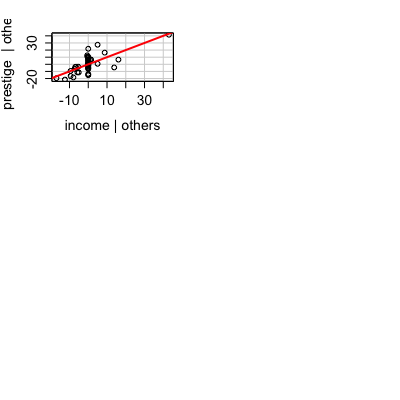
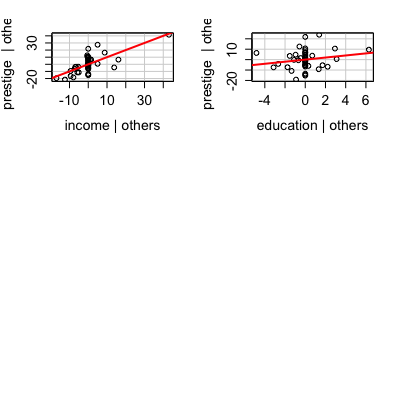
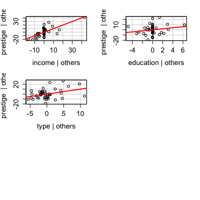
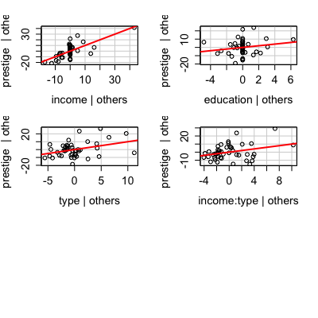
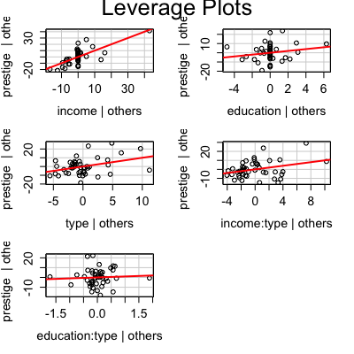

leveragePlots(model, terms = ~., layout = NULL, ask, main, ...) leveragePlot(model, ...) leveragePlot(model, term.name, id.method = list(abs(residuals(model, type = "pearson")), "x"), labels, id.n = if (id.method[1] == "identify") Inf else 0, id.cex = 1, id.col = palette()[1], col = palette()[1], col.lines = palette()[2], lwd = 2, xlab, ylab, main = "Leverage Plot", grid = TRUE, ...) leveragePlot(model, ...)
lm
~. is to plot against all numeric predictors. For example, the
specification terms = ~ . - X3 would plot against all predictors
except for X3. If this argument is a quoted name of one of the predictors, the
added-variable plot is drawn for that predictor only.
c(1, 1) or c(4, 3), the layout
of the graph will have this many rows and columns. If not set, the program
will select an appropriate layout. If the number of graphs exceed nine, you
must select the layout yourself, or you will get a maximum of nine per page.
If layout=NA, the function does not set the layout and the user can
use the par function to control the layout, for example to have
plots from two models in the same graphics window.
TRUE, a menu is provided in the R Console for the
user to select the term(s) to plot.
leveragePlots.id.n=0 for labeling no points. See
showLabels for details of these arguments.
2 (see par).
These functions display a generalization, due to Sall (1990) and Cook and Weisberg (1991), of added-variable plots to multiple-df terms in a linear model. When a term has just 1 df, the leverage plot is a rescaled version of the usual added-variable (partial-regression) plot.
The function intended for direct use is leveragePlots.
The model can contain factors and interactions. A leverage plot can be drawn for each term in the model, including the constant.
leveragePlot.glm is a dummy function, which generates an error message.
NULL. These functions are used for their side effect: producing
plots.
Cook, R. D. and Weisberg, S. (1991). Added Variable Plots in Linear Regression. In Stahel, W. and Weisberg, S. (eds.), Directions in Robust Statistics and Diagnostics. Springer, 47-60.
Fox, J. (2008) Applied Regression Analysis and Generalized Linear Models, Second Edition. Sage.
Fox, J. and Weisberg, S. (2011) An R Companion to Applied Regression, Second Edition, Sage.
Sall, J. (1990) Leverage plots for general linear hypotheses. American Statistician 44, 308--315.




